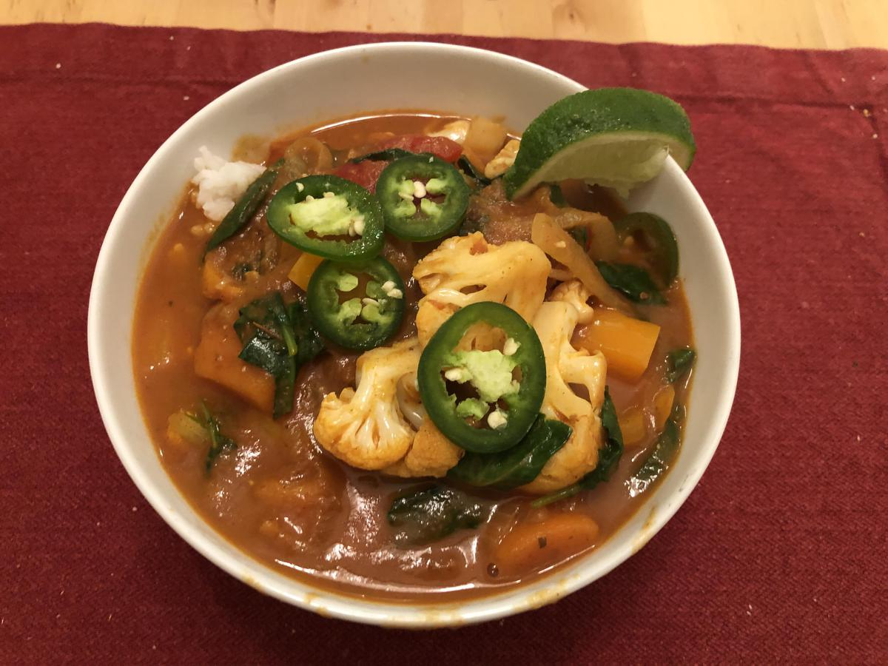

Based on https://www.washingtonpost.com/recipes/veggie-loaded-red-curry/17022/
Personal rating: 3 / 5

1/2 medium sweet onion, thinly sliced
1 large red bell pepper, seeded and thinly sliced
1/2 small cauliflower head, cut into florets (2 cups)
~2 Tbsp pure sesame oil
3 Tbsp mild red curry paste
1 tsp ginger (or 1-inch piece peeled fresh ginger root, grated)
8 oz (2 cups) frozen cubed butternut squash (or frozen cubed sweet potatoes)
1 cup full-fat coconut milk (see Note)
1 cup low-sodium vegetable broth
One 15-oz can crushed tomatoes (or tomato sauce or can of diced tomatoes)
1/2 tsp kosher salt
2 oz baby spinach leaves (2 cups)
3 cups cooked white or brown long-grain rice
1 lime, cut into wedges, for serving
Chop the onion and bell pepper (thin slice) and cauliflower (florets)
Heat oil in a large pot over medium heat. Add the onion, red curry paste, and ginger. Cook for 5 minutes until the onion has softened
Add the red bell pepper, cauliflower, frozen butternut squash (or sweet potatoes), coconut milk, broth, canned tomatoes, and salt
Cook, gently bubbling at the edges, for 13 minutes
Add the spinach (and if using, Fresno pepper). Cook for 2 minutes
Serve warm over rice, with a few squeezes of lime